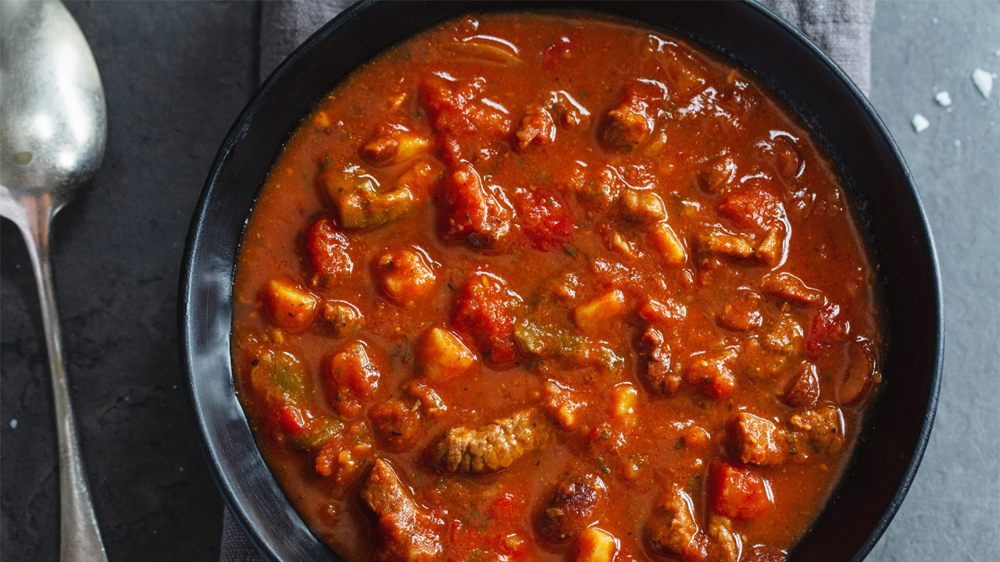

Gulaš

Description
Originally a part of Hungarian cuisine, gulaš made its way into Serbian kitchens and hearts.
Filling and fragrant, it’s the ultimate comfort food for chilly days. It’s typically made of beef,
but you can also use pork, chicken thighs, or even venison.
Ingredients
- 600g beef – diced
- 600g onion – diced
- 250 ml tomato sauce
- 1 tsp pepper
- 2 tsp paprika
- 1 tsp parsley
- salt to taste
- 600ml water
- 6 tbsp cooking oil
Instruction
- Add oil to a pot over medium heat. Add in the onion and fry it until it becomes glassy and dark yellow.
Pour in 300ml of water and let it simmer for 20 minutes.
- Add beef, parsley, and paprika, pour in the rest of the water, and stir.
Then, let it simmer until the meat becomes soft (the longer, the better). Stir occasionally.
- Once the meat is tender and the mixture thickens,
add tomato sauce, salt, and pepper and cook for another 15 minutes.
Serve it with pasta, rice, or mashed potatoes. Enjoy!